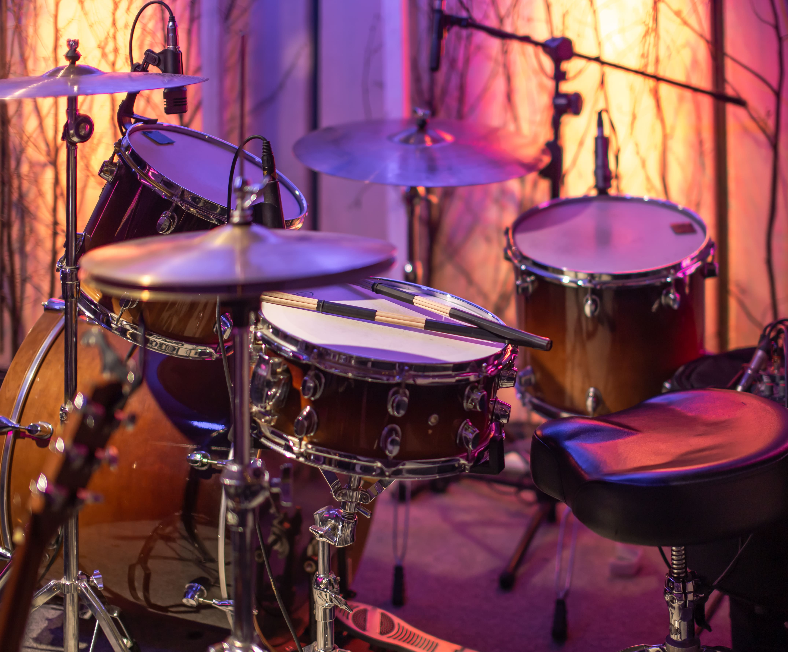
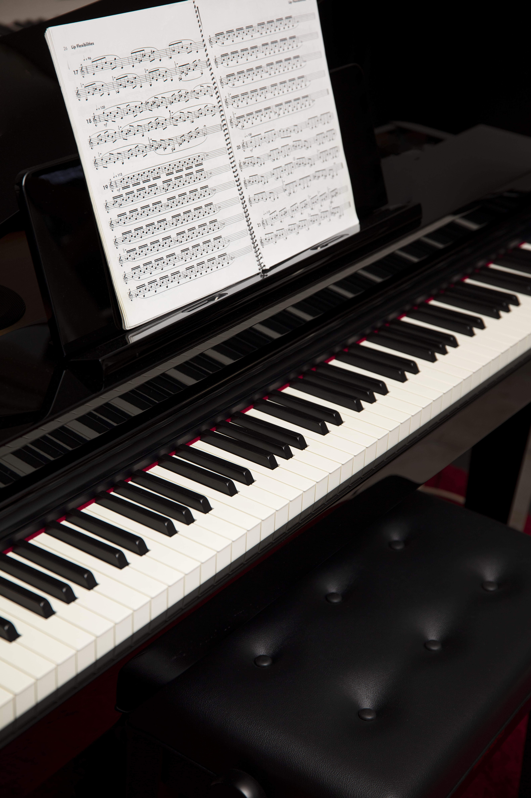
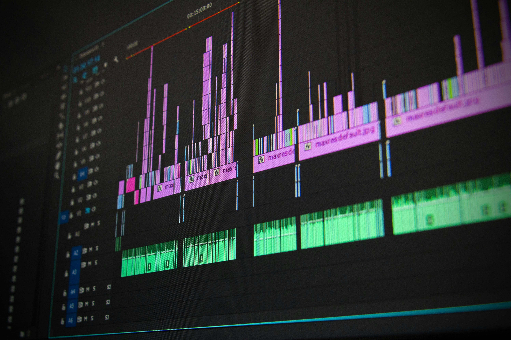
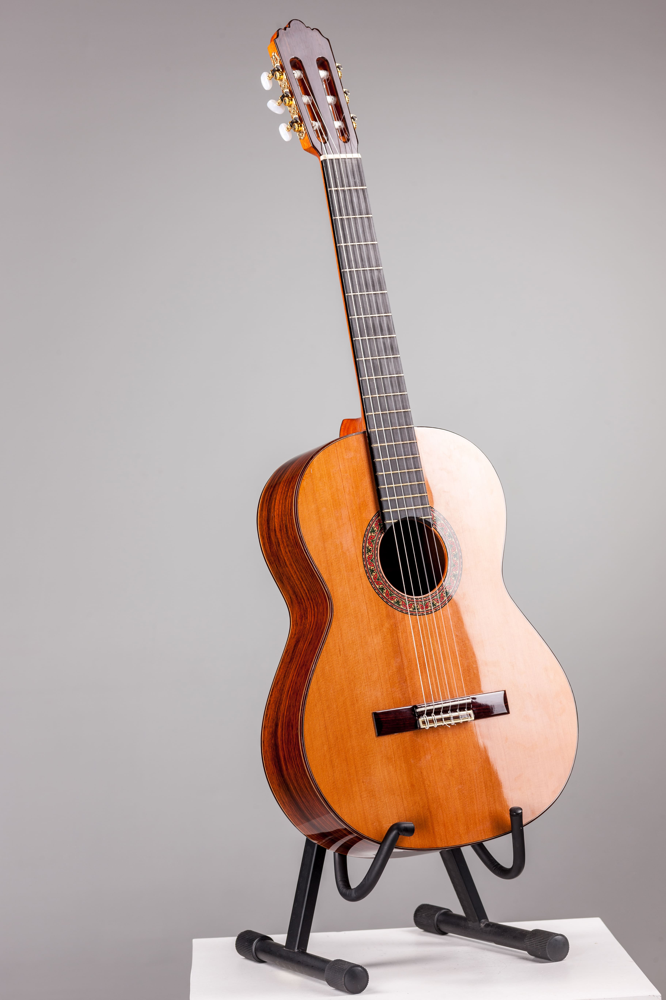
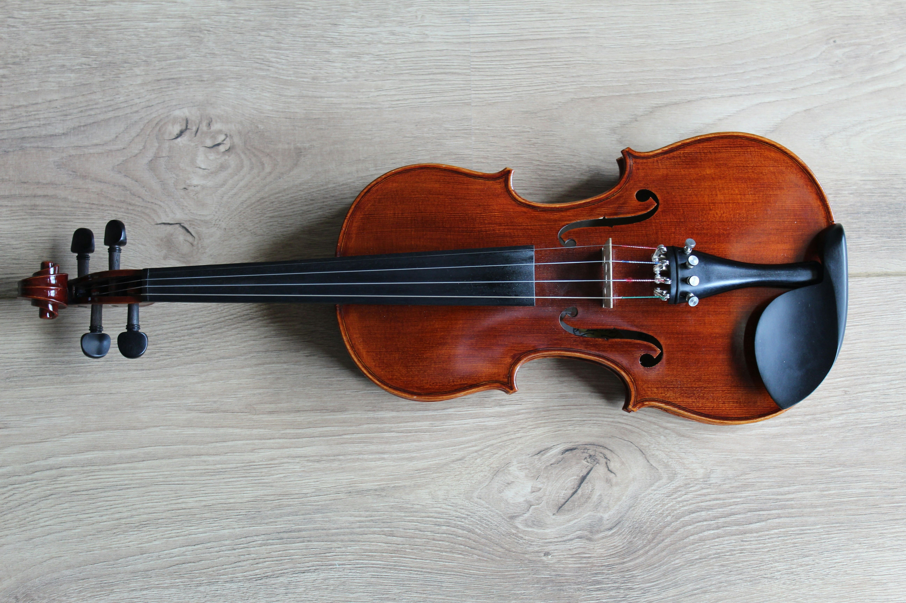
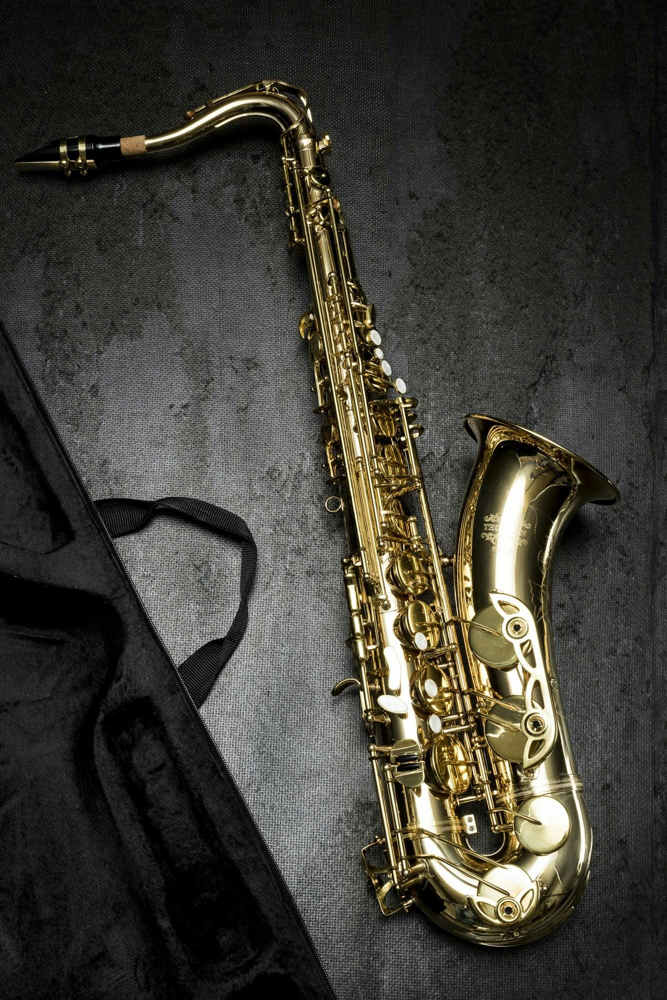
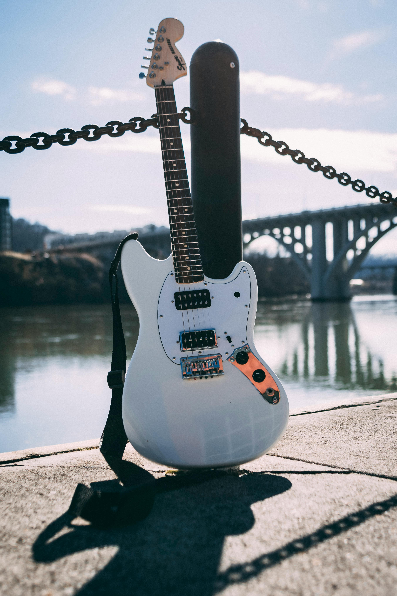

la musica se hace com los instrumentos mas hermosos del mundo
¿cual es el istumento que te gusta?
masbienvenidos a Mana music
Bienvenidos a los instrumento musical podra encontrar instumentos para combinación de uno o más sistemas resonantes capaces de producir uno o más tonos y medios para excitar,hemocionar a todas las personas com los instumentos músicales.
lo ultimo de nuestro blog

la bateria para un rock

los tonos suabes de un piano

la musica que quieras componer
el sonido de un piano
el sonido con ete paisaje

la vos que tu quieres sacar
testimonios
los intrumentos no es solo un istrumento musical es un arte algo que nos apasiona y nos gusta la musica

guitarrra

bateria

violin
microfono

saxofon

bajo
Ubicanos
calle 25 de mayo 748 entre aroma uruguay-cochabamba
celular:68595877